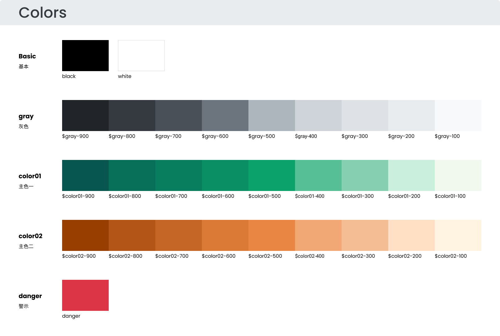
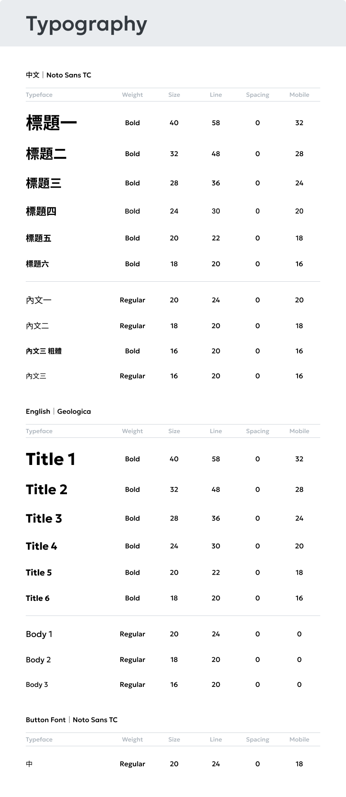
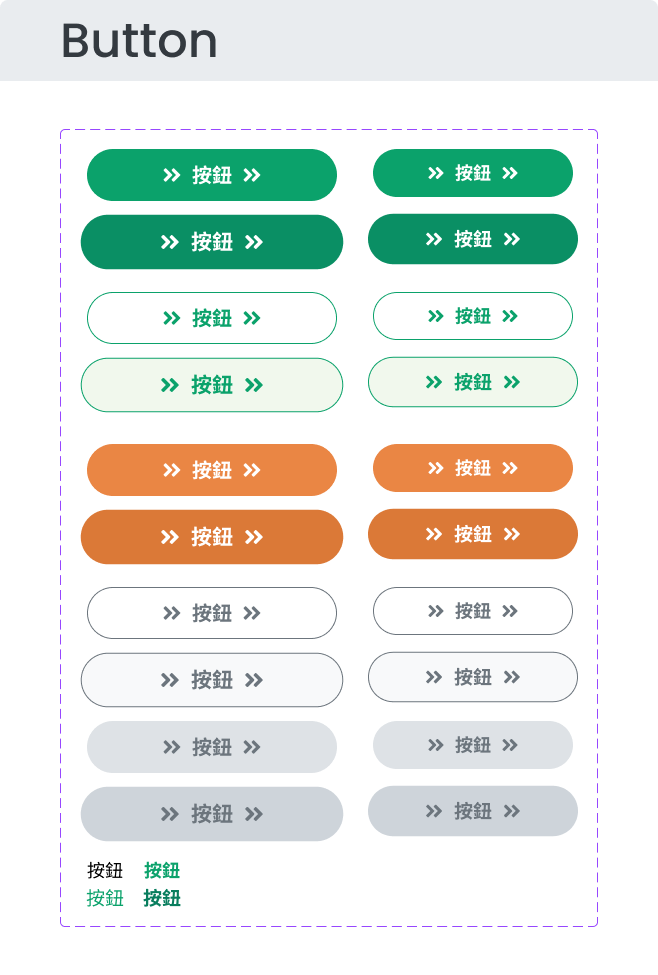
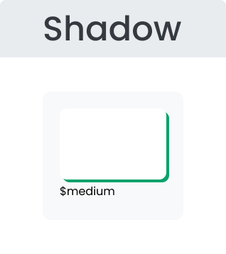

審核摘要
審核日期：2026-04-24
來源檔案：
- design-specs/Colors.png
- design-specs/Typography.png
- design-specs/Button.png
- design-specs/Shadow.png
- design-specs/WEB_首頁 2.png
- design-specs/WEB_會員登入.png
- design-specs/WEB_一般會員02.png
- design-specs/WEB_線上申請服務01.png
⚠️ 色碼為從設計稿圖檔目測估算值，正式使用前請與設計師確認精確色碼。新增 4 張 WEB 頁面設計稿，驗證了色彩/字體/按鈕/表單在實際頁面中的使用情況。
| # | 類別 | 狀態 | 說明 |
|---|---|---|---|
| 1 | 色彩系統 | ⚠️ 部分缺漏 |
|
| 2 | 字體系統 | ⚠️ 部分缺漏 |
|
| 3 | 間距系統 | ⚠️ 部分缺漏 |
|
| 4 | 圓角 | ⚠️ 部分缺漏 |
|
| 5 | 陰影 | ⚠️ 部分缺漏 |
|
| 6 | 按鈕狀態 | ⚠️ 部分缺漏 |
|
| 7 | 表單狀態 | ⚠️ 部分缺漏 |
|
| 8 | 無障礙 | ❌ 嚴重缺漏 |
|
| 9 | 圖示系統 | ⚠️ 部分缺漏 |
|
| 10 | 風格一致性 | ⚠️ 部分缺漏 |
|
逐稿審核結果
✅ 通過 27
⚠️ 注意 9
❌ 缺漏 16
Colors.png
元件規格
4✅
1⚠️
2❌
主色×2（teal green + orange）各 9 階 + 灰階 9 階 + 語意色 danger

- ✅ 主色一 teal green 9 階漸層完整（900–100）
- ✅ 主色二 orange 9 階漸層完整（900–100）
- ✅ 中性灰 gray 9 階完整（900–100）
- ✅ 語意色 danger（紅色）已定義
- ⚠️ 色票無 HEX 色碼標示
- ❌ 缺 success / warning / info 語意色
- ❌ 缺背景（background）/ 前景（foreground）配對定義
Typography.png
元件規格
4✅
1⚠️
1❌
Noto Sans TC + Geologica，H1–H6 + Body 含行高與 mobile size

- ✅ 中文字型 Noto Sans TC 已指定
- ✅ 英文字型 Geologica 已指定
- ✅ H1–H6 + Body 字級定義含行高
- ✅ 含 Mobile size 響應式定義
- ⚠️ 缺 Caption / Overline 層級
- ❌ 無 fallback 字型指定（如系統字型後備）
Button.png
元件規格
4✅
1⚠️
2❌
Primary / Secondary filled + outlined + Disabled + Text button

- ✅ Primary filled + outlined 雙版本
- ✅ Secondary filled + outlined 雙版本
- ✅ Disabled 狀態已定義
- ✅ Text button 類型已定義
- ⚠️ 白字 on 綠色按鈕對比度 ≈ 3:1（AA 需 4.5:1）
- ❌ 缺 Hover / Active / Focus ring 互動狀態
- ❌ 缺 Loading 與 Danger 變體
Shadow.png
元件規格
1✅
1❌
僅定義 Medium 1 級陰影

- ✅ Medium 級別陰影已定義，含參數值
- ❌ 僅 1 級，缺 low / high 層級系統
WEB_首頁 2.png
頁面設計稿
5✅
2⚠️
3❌
完整首頁：Header / Hero / 公告輪播 / 補助卡片 / 活動 / 新聞 / Footer

- ✅ 完整首頁結構含 Header、Hero、公告、補助、活動、新聞、Footer
- ✅ 綠色品牌調性統一，色彩使用與 Colors.png 一致
- ✅ 多種按鈕類型實際運用：Primary / Outlined / Tag / Ghost
- ✅ 字級層級與 Typography.png 對應（標題/副標/內文/按鈕）
- ✅ 觀察到一致的 8px 基準間距模式
- ⚠️ 圖示以 Outline 為主但混用 Filled + Emoji 風格
- ⚠️ 按鈕圓角不統一（查詢按鈕 8px vs Header 膠囊形）
- ❌ 按鈕僅呈現 Default 狀態，缺 Hover / Active
- ❌ Hero 區域白色文字在背景圖上對比不足
- ❌ 無 Focus indicator（鍵盤導航不可見）
WEB_會員登入.png
頁面設計稿
3✅
2⚠️
3❌
登入頁面：帳號/密碼/驗證碼 + LINE 登入 + QR Code

- ✅ 帳號 / 密碼 / 驗證碼輸入欄位完整
- ✅ LINE 登入 + QR Code 登入流程
- ✅ Header 含搜尋框元件
- ⚠️ CAPTCHA 驗證碼圖片無替代方案（無障礙風險）
- ⚠️ 連結文字僅靠顏色區分，無底線輔助
- ❌ 🚨 白字 on 綠色按鈕對比度 ≈ 3:1（WCAG AA 需 4.5:1）
- ❌ 表單僅 Default 狀態，缺 Focus / Error / Disabled
- ❌ 無 Focus indicator
WEB_一般會員02.png
頁面設計稿
3✅
1⚠️
2❌
Step 2 帳號設定：手機輸入 + Error 文字 + 步驟指示器

- ✅ 步驟式表單 Step 2 帳號設定結構完整
- ✅ 深綠側邊欄步驟指示器（Step 1–5）
- ✅ 手機輸入框含錯誤訊息文字（首次見到 Error 狀態）
- ⚠️ Error 狀態僅有文字提示，輸入框邊框未變紅色
- ❌ 缺 Focus / Disabled / Success 表單狀態
- ❌ 無 Focus indicator
WEB_線上申請服務01.png
頁面設計稿
3✅
1⚠️
2❌
線上申請服務：搜尋篩選 + 服務卡片列表 + 分頁

- ✅ 搜尋篩選功能 + 服務卡片列表 + 分頁元件
- ✅ 到期警告標籤使用 Warning 橘色（#F57C00）
- ✅ 自訂 Radio 與 Tag 篩選元件
- ⚠️ 卡片陰影極輕，整體扁平風格（與 Shadow.png 定義不一致）
- ❌ 篩選元件僅 Default 狀態，缺互動回饋
- ❌ 無 Focus indicator